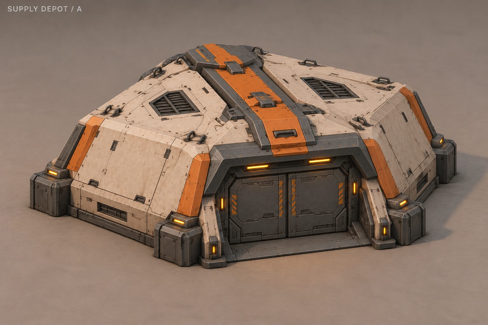
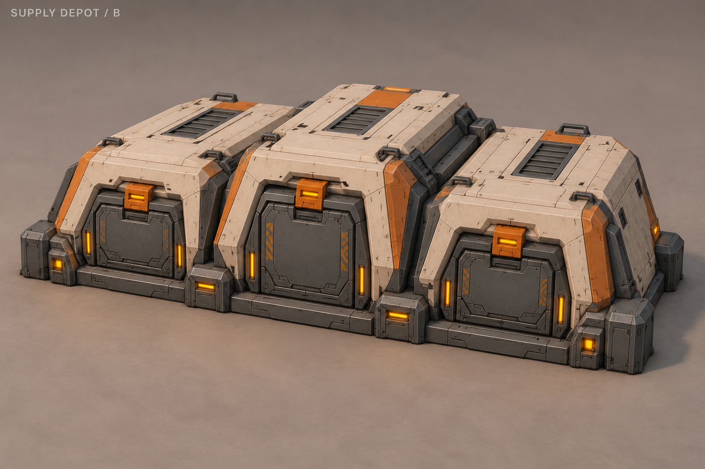
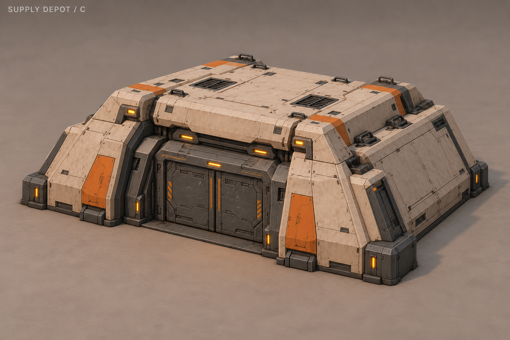
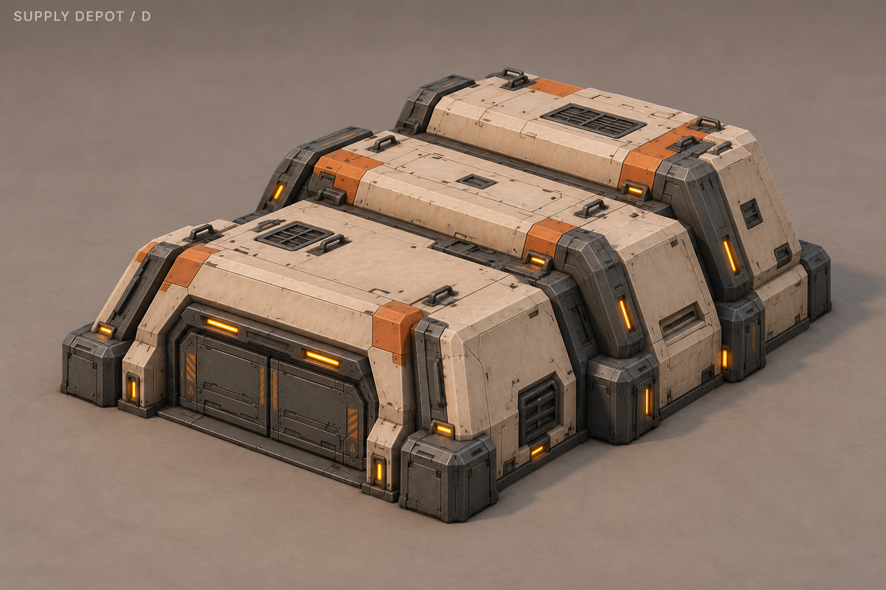
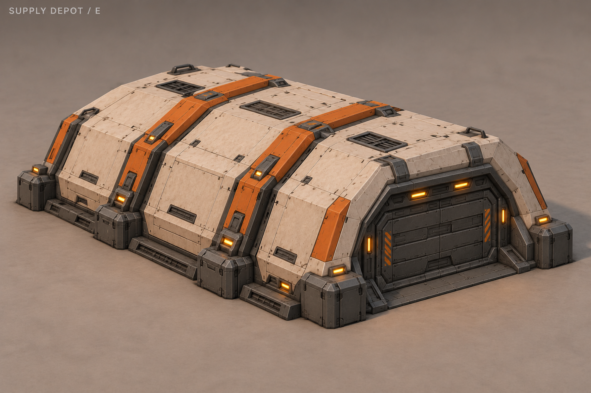
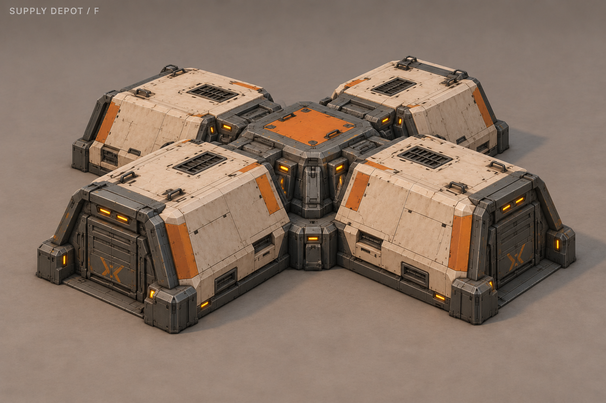
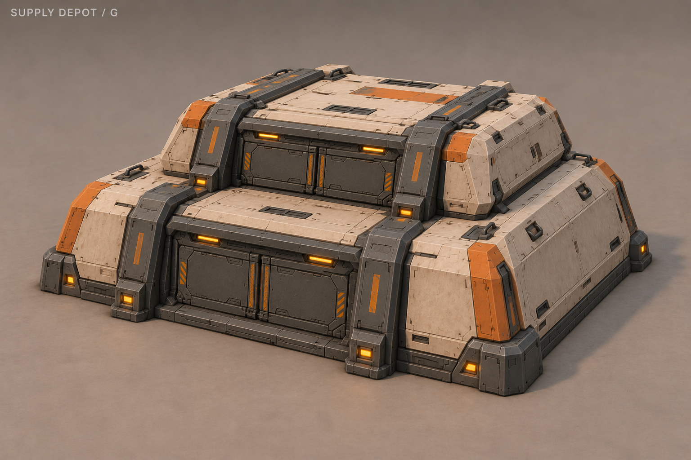
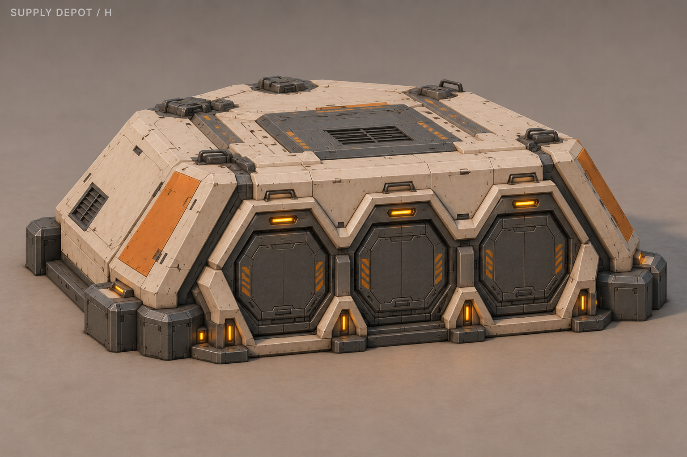

A «Панцирь»
Цельный низкий бронекорпус с пологой крышей и центральной запирающей полосой.

B «Кассеты»
Три закрытые грузовые кассеты на общем основании.

C «Скоба»
Широкий складской блок между силовыми щеками под общей крышкой.

D «Ступени»
Три ступенчатых объёма, повышающихся к задней части.

E «Арка»
Гранёный свод и два наружных запирающих ребра.

F «Коллектор»
Четыре складских блока вокруг низкого центрального соединения.

G «Пакет»
Две кассеты одна над другой, стянутые силовыми лентами.

H «Соты»
Три крупных гранёных люка в едином низком корпусе.